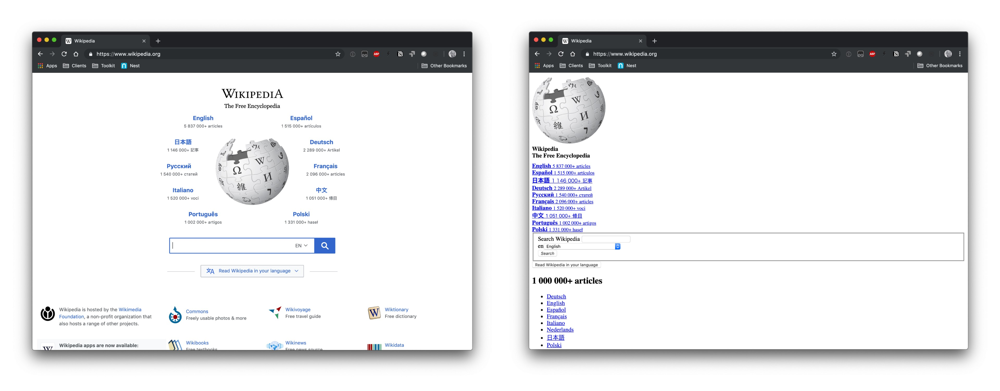
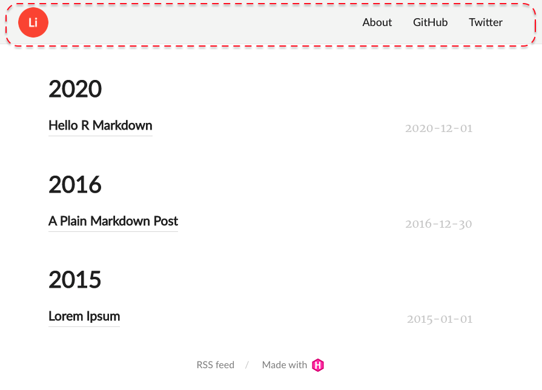
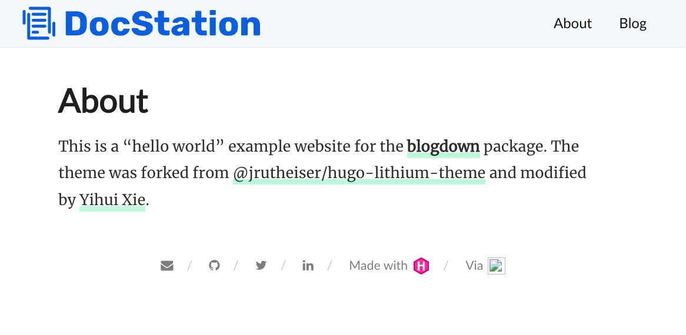

Build a blogdown site from scratch with code-folding, a custom footer, & other hugo theme hacks
walkthrough
Author
Mark Druffel
Published
January 5, 2022
Background
I’ve created a few different versions of my blog using blogdown. Creating new blog with blogdown is so simple, but customizing can be finicky. I started a guide when I upgrade my site to blogdown 1.0, but was still sitting in a stack of posts that never made their way to the web when I started writing this :flushed: Now a year later I’m hoping to use blogdown internally at my new job to disseminate analysis more easily and I could really use that post as a guide :scream: So, for posterity I’m going to document the process as I go through it. If you’d like to learn how to create blogdown site or learn how to customize on your existing blogdown site, read on.
What is blogdown?
blogdown is an R package witten by Yihui Xie that wraps the Hugo web development framework. Blogdown provides a tool for R developers to build their own blogs and portfolio sites from Hugo templates. There are several other R libraries to consider for publishing including distill, bookdown, and hugodown. We’ll cover blogdown only in this post.
Learning blogdown
If you’re new to blogdown I recommend this article from Alison Presmanes Hill Hill. Alison spent a few years working on the RStudio team and her blog is loaded with blogdown walk-throughs and gotcha’s. I highly recommend looking through her blog for other content. Additionally, Yihui wrote a blogdown book that I always keep handy. Finally, I occasionally look through Yihui’s stack overflow answers just to find tidbits of info about how rmarkdown, knitr, blogdown, etc. really work because they are so complicated and black-box like… It’s not specifically a resource for blogdown, but blogdown relies on the knitr and rmarkdown infrastructure so it helps to understand those packages behind the package. Aside from that, blogdown relies on rmarkdown. If you’ve not used rmarkdown before I recommend at least going through a bit of this guide from RStudio.
What is Hugo?
Hugo is a web development framework used to build static websites. It’s is one of the most popular static site generators available at this time. If you’re looking to use blogdown, you do not necessarily need to know almost anything about Hugo to succeed. However, the more you understand Hugo the easier it becomes to customize your site, debug, etc.
Learning Hugo
I’ll cover some of the basics in the next section, but I’ll barely scratch the surface on Hugo. If you want to learn more, the Hugo documentation and a youtube playlist Hugo provides are both good resources. I also found this tutorial by Adi Purdila useful. I haven’t gone through and built my own Hugo site outside blogdown, but just watching the tutorial helped me understand how Hugo works for customization. This is probably a great starting point if you want to learn how to build your own template, but I’m not going there just yet…
Prerequisites
If you’ve never done web development at all there are some basic concepts and tools that are important to understand, but given that most of us have been on the internet for a few decades the learning curve isn’t too bad. I am not a web developer and have no business teaching web development so please take all this with a grain of salt. The reason I decided to spend time on it is simply that building and customizing a blogdown site requires very basic knowledge of web development. As I was writing the walk through I kept coming back to these concepts and it felt disingenous to write the post without making some attempt to cover them - knowing and acknowledging that my attempt will probably be clumsy at best :grimacing:
HTML (HyperText Markup Language)
HTML is the primary building block of web pages. There’s a ton to learn about HTML. I recommend w3school’s HTML tutorial if you want to get a broad understanding. The two things I’d definitely recommend reviewing are HTML elements (aka HTML tags) and HTML attributes. I always keep these lists of HTML elements and HTML attributes handy.
CSS (Cascading Style Sheets)
CSS is code used to describe how html elements are to be displayed on a webpage, CSS “styles” a webpage. I borrowed the below image from a css-tricks post, but the image on the right shows what Wikipedia’s homepage would look like without CSS.

Again, I recommend w3school’s CSS tutorial to get a broad understanding of CSS. If you want to do something to style your site search it and don’t be afraid to post on stackoverflow. I find a lot of really specific CSS implementations on there that I’ve tried to jam into my personal site over time. Time more you do it the easier it gets. What you need to know in CSS can be especially specific to your goal, but I’d recommend reviewing CSS syntax and CSS selectors regardless because they’re very useful and fundamental.
Browser Developer Tools
The browser web developer tools that come in your standard issue web browser are critical to working on web development. The most commonly used tool within the set is the element inspector which usually is represented by a little square with an arrow in the corner. This video shows a few ways you can use the element inspector.
Using the element inspector allows you to find code related to an element so you can understand the code and make changes. We can try it on David Robinson’s website by opening web developer tools, selecting the image of David, and changing the image link to another image on the web.
Changing the content can be useful for obvious reasons, but we can also modify the CSS around objects. We might not want the radial border around the image. We can find that CSS property if we select the image and look in the styles tab. Finding the right CSS property can require some knowledge, but it’s usually not too hard to figure looking at the different names and tinkering. David’s picture is inside an html img tag which contains a class class="bio-photo. The styles tab has a CSS selector called .article-author-side .bio-photo. That CSS selector has a property called border-radius. Un-check that property and see what the site would look like without it. A note, many of the bigger sites use system generated class names and things of that nature which can make this approach break down quickly.
We can also add new properties to see what a change might look like. Knowing all the styling options you can use is overwhelming, but just search by the html tag name, in this case img, and “CSS properties” (i.e. search img CSS properties) and you’ll usually get useful results. On this one I ended up back at w3schools CSS tutorial.
We could probably take this pretty far, but I’ll cover one more CSS change. We can change the fonts of text in the site using the same basic approach. Fonts have several CSS properties, but the property that is similar to “font” inside of a word processing software is font family. Just like most areas in technology, fonts can get very “deep.” To my understanding, no fonts are perfectly web safe, meaning they may not work as intended in some browsers or contexts. These fonts are considered the safest, but they’re also a bit bland which might not be the best choice for all sites. Regardless of what font you choose, always have a few fallback fonts. Meaning, instead of deleting the font family listed, we can just add our new font to the front. There are obvious style considerations like this new font looking way different than the fallback, but that’s a different discussion. When setting fonts in the CSS, include a fallback that you intend to be the fallback rather than relying on the browser’s default. If you want to find reasonably web safe fonts, Google fonts has a lot of options.
Testing
While we’re building our site we’ll want to test that it works. RStudio has a viewer pane that’s closest to development, which I love. However, there are always little differences that can pop up between what we see in RStudio and what shows up in the browser when it gets there. I recommend testing in a browser often. I use Brave as my primary web browser, but I also use Chrome and Safari to test my pages during web development because most users will likely be in one of the two.
Beyond that, I also like to do a little bit of device testing. I don’t expect I have a ton of mobile users, but I still don’t want to have an awful mobile experience if I can help it. I use a tool called LT Browser to quickly see how the site will look on various devices.
Hugo Basics
As noted, I’ve never built a Hugo site without blogdown so take all my Hugo advice and instruction with a block of salt. That said, there are a few Hugo concepts that you do have to understand if you want to build a site with blogdown and / or customize the site. I’d recommend reading Alison’s article How much hugo do I need to know?. This will help you decide what parts you want to spend time trying to understand. I’ll be referencing parts of this article later as well, so it provides helpful context. Aside from that, here’s my high-level understanding of these concepts gives you more than enough context for the walk-through.
Themes
Hugo sites are built off of themes, which I think of as a website template. Hugo provides mechanics to use a single template for many purposes by changing parameters before rendering the site. Hugo provides a list of themes or you can build your own. When selecting a theme to use, I recommend going to the github page and looking at the commit history, the contributors, and the documentation to assess how much you can rely on the theme. It’s obviously just a guess regardless, but I think it’s a good idea. Regardless, once you select a theme, test it with blogdown before you do anything else. Many themes don’t work with blogdown out of the box. I honestly don’t know exactly why, but I’d guess reasons vary from theme to theme.
Config file
Hugo uses a config file with a list of variables that allow users to easily customize their site. For example, the variable title is used to set the title of your site that shows up in search engines and on the browser tab. Themes generally come with a config file, but the variables included vary from theme to theme. The config variables are provided by Hugo so they can be added, but themes can also provide custom variables called params. Params can be in the config file or in a separate file in the config directory. Configs generally contain a menu which is how the site menu (i.e. navigation bar) is configured. The menu also has variables provided by Hugo and can be broken into a separate file in the config directory. This site is small so I don’t expect the config file to get too big, but for larger sites the config can be broken into several files.
Static Files
Static files get served as-is on the site root. This is useful for storing resources in the site’s root. The resources can be images, JS, CSS, etc. (e.g. an image on the home page).
Content
The content is the substance of the site and Hugo assumes so organizational structure of the site which is explain here. This part seems complicated, but in my experience this is the easiest part to understand when using blogdown.
Templating
Templating is basically Hugo’s engine. It seems very intimidating when you start using blogdown, but it’s honestly not - we’re just not comfortable enough (or at least I’m not) with all the HTML, CSS, & JS to fully understand how simple Hugo is. Hugo uses templated HTML in combination with other resources in order to dynamically build webpages when the site gets built. Sounds kind of crazy, but if you use glue or jinja it’s pretty familiar. Template variables and functions are accessed within {{ }}.
Build a site from scratch
Alright I’ve laid out a lot of background info that most of you probably skipped over (no judgement) so let’s get right into it. I’m building this site using hugo-lithium because it’s minimalist and supported by RStudio.
Project setup
In Rstudio, go to File -> New Project and there is a simple template. Alternatively, we can use the function blogdown::new_site(). Once the site is built, check that the template is working properly by running blogdown::serve_site(). For more details refer to the book.
Blogdown will automagically setup a repo structure (create folders and files) for the site, similarly to how devtools::create_package() does for R package development if that’s a familiar process. Since blogdown is a wrapper around Hugo, the repo has resources for both blogdown and Hugo. I’ll get into more detail as we customize certain parts of the site, but Alison provided an easy cheat sheet for the folder structure in the below tweet.
{{% tweet "1078494406301212672" %}}
Customize Navbar
The navbar we start with has a number of components including the home button, page links, and CSS properties. To modify it, we’ll start in the config file - config.yaml.

header v.0
Page Links
We can modify page links by changing the menu object in config.yaml. The name is the text that will show up in the header, the url is the path that will be added to the site’s base url, and the weight dictates the order on the header (lower numbers show up first reading left to right). The urls must be relative to the context root or an absolute url. For example, for the site www.mark-druffel.com, using /about/ in the menu would go to wwww.mark-druffel.com/about. and www.duckduckgo.com would go to that external site. This is very straight forward, but using absolute paths can be useful to forward a user to a resume or link in a shiny app.
The logo object seems to be the home button, but it’s not immediately apparent where the logo.png file comes from. If you poke around the folders you’ll find the image at ~/themes/hugo-lithium/static/images/logo.png. You can add another image file there and change the config to update your header, but remember Alison warned us not to touch ~/themes. Changing the file in ~/themes will technically work, but the safer way to make the change is by adding the new logo to ~/static. Blogdown will take files from ~/static in replacement of files in ~themes/.../static. We’ll use static for a number of modifications so it’s easiest to create a few required folders now.
As you can probably guess, we’ll use the ~/static/images folder for the new logo. I added the image file, modified config.yaml to reflect the new file name, and ran blogdown::serve_site() again. The new image loaded, but the logo doesn’t look right. My image is a rectangle and the edges are being shaved off.
logo: alt: Logo height: 50 url: home_logo.svg width: 50
This is just a CSS property. We can use the element inspector see the CSS properties on the logo element. The CSS selector .nav-logo img has a border-radius that looks like a good candidate. We confirm by un-checking the property from that selector.
Now that we know the thing we want to change is coming from CSS, we need to modify the CSS file for the theme. Again, we’ll work from ~/static not ~/themes. You can simply copy the main.css file to static using the code below, open the css file, and comment out or delete line 69. CSS comments are applied like this - /* border-radius: 100%; */.
Now the logo should load without the border radius. However, it’s possible it won’t even though the code is fine. Initially when I ran blogdown::serve_site() it had the border radius on all the browsers I tried. I restarted my R session and still had the issue. When I restarted RStudio and reran blogdown::serve_site() it worked in Brave, but it still didn’t work in Chrome (shown below). I’ve seen this behavior in a few situations using blogdown and I think there are a few reasons this can happen, but since it was working in one browser and not the other it seemed to be due to browser caching. I’d recommend reserving a specific browser for testing and continually clearing browsing data. This article explains a bit more about browsing data and instructions on deleting it.
browser caches css
Since the navbar is a pretty important part of the experience, it’s important it works everywhere. We can do device testing using LT Browser. My logo is pretty large and for some of the smaller devices it took over the header and moved the buttons. We can fix that for smaller devices specifically in the CSS. CSS has an @media rule that can be used to apply different styles to different devices based on things such as the screen size of the browser session. This CSS file already had an @media section setup, but the code I found on w3schools worked more consistently when I tested so I updated teh @media rule on line 253 to include only screen and. Additionally, we’ll add a max-height & max-width starting at line 262 to shrink the logo within this @media rule. The change fixed the issue on all devices.
Again, we can use the element inspector to figure out which CSS selector and property to change for the background color. The .header selector has a background property. We can replace that property on line 44 with a new color. Sometimes if I can’t find where a color is coming from in the web page, I use Color Slurp to pluck the color hex from the screen and search in the CSS files.
If you want to use different fonts on the navbar (or anywhere else on the site), you’ll need to load new fonts. There are two ways I know of to accomplish this, download font files and import them from a folder or import them a font API in our CSS. I recommend the API route because I think it’s less work, but there are reasons you might want to download the files, namely if you plan to render the site without internet or in an environment with firewalls (that may interfere with API calls).
Download Font Files
To download the font files and import them, we need to move the foncts.css to ~/static/css. The fonts.css file sets up fonts for the site, which could be done in main.css.
We also need to move the font files themselves. We can define a font class, but the site still needs a font file to implement that font, similar to installing new fonts on your computer. Blogdown stores font files in ~/static/fonts. We can get fonts from a lot of places, but a great resource is Google Fonts. Select a font and download the files. One of the fonts I selected, Rubik, provided a variable font instead of a static font - you can read about the difference here. The files included are all .ttf, but we need .woff2. We can use this free conversion tool. Once the files are converted we can add them to our ~/static/fonts folder.
After adding the fonts to the folder, we need to import the fonts in our CSS. We can use the example from the variable font documentation as-is, but you can read more about the @font-face rule here.
Alternatively, we can directly import the fonts into our CSS. I recommend this as it’s much easier, but it requires an internet connection when rendering the site. To do this select a font, choose the styles, and copy the style sheet code. Make sure to select all the styles and weights you want available.
We can add we can add the font to HTML elements or CSS selectors’ properties. We want to change the font of the navbar buttons so we’ll change the font-family property of the CSS selector .nav-links li. We can also make other changes like increasing font-size, weight, etc. Regarding font-size, you can use rem or em instead of px sizes, which scale to the browser settings, learn more here. I chose to use rem. Also, I set fallback fonts as recommended if you read about web safe fonts. I don’t think it’s necessary to fall back to serif or monospace unless you want to ensure a specific typeface, the browser will fallback to something automatically.
Code
body {font-family: Roboto, Merriweather;font-size: 1rem;}.nav-links li {display: inline-block;margin: 00015px;font-family: Rubik, Overpass;font-size: 1.25rem;}
That all looks great, but it’d also be nice to have some behavior when the user hovers on the button. We can do that by modifying a CSS selector with :hover. The :hover is a CSS Pseudo-selector applied to elements when you mouse over them. There are many Pseudo-selectors available you can read about here. The main CSS file already has a .nav-links a:hover selector so we can add a font-weight and text-decoration property to that. There’s a lot more we can do with buttons, but this site is very minimalist so I think this style works well. However, you can see several other options and how to implement them here.
The navbar spans across all the pages, but the content is each of the pages under the navbar. Site content goes in, you guessed it, ~/content/. The site will have an about page and posts by default, but you can add as many pages directly under ~/content/ as you’d like. Just don’t forget to add them to the menu in your config.yaml so the user can navigate to them. Beyond pages directly under ~/content/, the Hugo theme will generally have some default folders including ~/post/, which is the default location for blog posts.
New Posts
To create posts, I typically copy old posts because I customize my yaml header a bit. However, for a new site you can either copy one of the demo posts included or just use the RStudio add-in (shown below).
Permalinks
Each post’s url is generated by by Hugo using the the config.yaml and the document slug from the post’s yaml header. So if our site was www.mark-druffel.com and we used the configuration below, a post url would be www.mark-druffel.com/2021/10/15/this-posts-title. I personally find that to be overkill because I don’t post multiple times a day and my titles aren’t likely to be the same so I just use post: /:year/:slug/ for my blog.
permalinks: post: /:year/:month/:day/:slug/
Styles
There are a number of changes that can be made to improve the look and feel of all pages under ~/content/, but for this site I’m sticking very close to the theme. Just know, you can change any of the CSS styles the same way we did with the navbar to apply CSS properties across all the content on the site! The one thing we will change for this site is fonts.
Fonts
We already changed fonts in the navbar so I won’t walk back through the entire process, but here’s the CSS code I used to modify fonts throughout my content. I just repeated the some process of finding parts of the page I wanted to modify, finding the CSS selectors, importing the font I wanted, and applying it to the CSS selector.
Now we have a blog with a custom navbar and fonts throughout all of the content. However, you might notice some content doesn’t pick up our CSS configurations.
Style Raster Graphics
When we publish blog posts we’ll render all sorts of content using R libraries. Unfortunately, the outputs from our R code may not easily integrate to our site and this can be one of the trickier parts of maintaining a nice looking blog, especially if you choose a highly styled theme :grimacing: In this case, the image a raster graphic. Raster graphics are image files (pixels), which have no use for CSS code. We need to apply the same properties to our R graphics to match the style of the site. This applies to any plotting using the graphics device including ggplot2 :astonished:
We can resolve this problem a few different ways, but the first and most obvious approach is to customize the ggplot2 theme. The theme() function in ggplot2 provides a huge number of settings that can be used to customize the output including color, font, background, etc. This really becomes more of a ggplot2 tutorial, so I’m going to skip a bit of the details but the aforementioned resources should provide more than enough to customize your ggplot2 output for your blog. I try to be DRY (do not repeat yourself) when possible so I created a few themes for my blog for different visual types (e.g. one for standard visuals, one for faceted plots, one for non-grid based plots like network diagrams, etc.). Below is a gist of my standard theme if it’s a helpful starting point. You can choose existing themes and add onto them as show below (i.e. theme_minimal() + theme(...)).
Depending how you style your blog, I think you could also use thematic and bslib, but since the blog doesn’t use bootstrap by default I personally haven’t tried to do that… Aside from the theme, some other helpful resources when using ggplot2 in blogdown include ggthemes, ragg, showtext, and ggtext.
ggthemes
Library with complete ggplot2 themes including pre-built color scale functions. I don’t use ggthemes on my blog, but you could adopt a theme from there if any fit the style of your site which would simplify things tremendously.
ragg
The ragg library will simply improve R’s raster graphics rendering performance and quality. It will make ggplot2 output look sharper.
showtext
The showtext library makes it easier to use non-standard fonts with the R graphics device. Again, our site’s CSS is not available to ggplot2 when we render plots. Therefore, we’ll have to either install fonts on our machine (similar to adding them to a folder for the site) or load them from an API (similar to importing them in our CSS from the fonts API). Then we need to make them available to the R session. You can see an example in the package vignettes. Instructions for installing fonts on a machine will vary by OS, but it’s very simple to do on Linux, Mac, or Windows if you just use a search engine.
ggtext
The ggtext library allows the use of markdown syntax inside ggplot2. This does not change your theme, it’s just an easy way to bold titles and things like that on an individual plot.
Ok let’s look apply this stuff to our aforementioned plot from the demo post. Open ~/content/post/<date>-r-markdown/index.Rmd. Load the necessary libraries, load the fonts, run showtext_auto() to make the fonts available, and create a theme function you’ll use on your plot. I used a theme based on theme_void() since the demo is a pie chart.
Code
library(ragg)library(showtext)library(tidyverse)library(ggrepel)# Tell knitr to use ragg for graphicsknitr::opts_chunk$set(dev ="ragg_png")# font_add_google is a function in sysfonts which is loaded by showtextfont_add_google("Rubik", "rubik")font_add_google("Roboto", "roboto")font_add_google("Fira Code", "firaCode")# Adding a noticeable font just to make sure everything is workingfont_add_google("Homemade Apple", "homemadeApple")showtext_auto()theme_void_blog <-function(...){ ggplot2::theme_void() + ggplot2::theme(text = ggplot2::element_text(family ="roboto",size =11, inherit.blank =FALSE),title = ggplot2::element_text(family ="homemadeApple",face ="bold",size =18, inherit.blank =FALSE,hjust = .5),plot.subtitle = ggplot2::element_text(family ="homemadeApple",size =14, inherit.blank =FALSE), legend.title = ggplot2::element_text(family ="rubik", size =12,face ="bold",inherit.blank =FALSE,hjust = .5), legend.text = ggplot2::element_text(family ="roboto", color ="#33334D", size =10, hjust =0) ) + ggplot2::theme(...)}
This demo file uses the pie() function from base R. Nothing wrong with the function, but I’m not as familiar with the base R plotting tools so I’m going to use ggplot2 instead. The labels actually aren’t as simple with ggplot, but I just used ggrepel to make the labeling simpler. The new fonts should load and mostly the same visualization should render with your new fonts.
Code
tibble::tibble(#value = c(280, 60, 20),value =c(280, 60, 20),name =c('Sky', 'Shady side of pyramid', 'Sunny side of pyramid'),color =c('#0292D8', '#F7EA39', '#C4B632')) |>ggplot(aes(x ="", y = value, label = name, fill = color)) +geom_col() +coord_polar(theta ="y", start = pi /1.275, direction =-1) +scale_fill_identity() +geom_text_repel(family ="roboto", size =5, nudge_x = .6, show.legend =FALSE, segment.color ="transparent") +labs(title ="To make sure showtext is working") +theme_void_blog()
Style Vector Graphics
R libraries don’t just produce raster graphics like plots from ggplot2, many libraries use the htmlwidgets framework which uses HTML, CSS, and JavaScript to produce interactive visualizations / widgets. Depending on exactly how the widget is set up, it will inherit CSS properties from your site. However, you may want to create new CSS properties or apply existing properties to specific parts of the widget.
If you add the code below to a new block inside ~/content/post/<date>-r-markdown/index.Rmd and run you’ll create a d3.js scatter plot from the metricsgraphics library.
Code
library(metricsgraphics)mtcars %>%mjs_plot(x=wt, y=mpg, width=600, height=500) %>%mjs_point(color_accessor=carb, size_accessor=carb) %>%mjs_labs(x="Weight of Car", y="Miles per Gallon")
If you inspect the CSS carefully you can see the CSS properties we added in the apply new fonts section.
That’s likely the behavior we’d want. That said, if we wanted to modify the font of the axises, for instance, we could add CSS properties to the classes of the htmlwidget like so. Many htmlwidget libraries provide tools to do this directly, for instance metricsgraphics::mjs_add_css_rule(), but it’s good to know how to do it directly in the Rmarkdown document as well because sometimes that’s necessary or easier.
Some htmlwidgets have generic CSS selectors that are in main.css, but no way to modify them through the library. An example I’ve bumped into in the past was the library skimr. These selectors were probably chosen intentionally to try to easily match site styles, but sometimes it doesn’t look great. To avoid those conflicts, throughout your entire main.css file you can use a prefix for the site. For example, you could change .header to .site-header.
Code
# Find and replace ".header {" to ".site-header {"usethis::edit_file(main_css)
If you do that, you’ll have to find references of that class in your html partials. First, move the partial from the theme as we’ve mentioned before. WARNING, WE MODIFY THIS FILE SEVERAL PLACES. DO NOT RUN THIS CODE IF YOU ALREADY MOVED THIS FILE INTO YOUR PARTIALS FOLDER, IT WILL ERASE YOUR WORK!
Now, let’s move onto the really hard hitting content like emojis! :joy: As you’ve seen throughout this post there’s a lot of multimedia you can use on a page. Hugo provides support for a number of things that blogdown wraps directly like emojis, tweets, youtube, etc. Beyond Hugo and blogdown, there are several R libraries that can provide additional content such as fontawesome.
I’m going to modify the about page to demonstrate a few of these tools, content/about.md. Notice the about page is a .md file not an .Rmd file. Vanilla .md files can be used for simple pages with just text, images, emojis, but they will not have access to R. I generally use .Rmd files for everything, but .md are less complex and render much more quickly so keep that in mind.
To demonstrate all the multimedia functionality that comes to mind, I’ll need an .Rmd file so delete the .md version (optional) and create about.Rmd. In about.Rmd, first we setup our yaml header. There are a number of options that can be set in the yaml header, refer to the rmarkdown cookbook for more details - these yaml headers provide a lot of customization features out of the box.
---title: "About"---
Under our header we can start to create our about page. We can use Hugo’s built in emojis in our sentences to insert emojis that are words wrapped in colons anywhere in the document. For these to work, we need to add a line to config.yaml.
The list of emojis supported by Hugo is small, but we can use the fontawesome package to insert fontawesome emojis. To find new fontawesome icons search here or use fontawesome::fa_metadata(). Note the heart in the code below is an emoji in the Hugo supported syntax, since blogdown parses the entire document it will add emojis in code blocks as well.
Code
This is a blog I have created to share analytics with my team members. Although we have and :heart: Apache Superset & shiny, sometimes I just want to quickly share analysis I perform in`fontawesome::fa("r-project", fill = "steelblue")`.
Hugo has a shortcode feature that allows users to pull in content from a number of platforms. The blogdown::shortcode() function is a wrapper to use it. It can be used to embed tweets, figures, youtube videos, gists, etc.
Code
blogdown::shortcode("youtube", "2xkNJL4gJ9E")
It can also be used for syntax highlighting languages which may not be supported by knitr.
Code
blogdown::shortcode("highlight", "bash", .content ="echo Thanks for visiting our new site!;")
bash echo "Thanks for visiting our new site!"
You might be thinking, shortcode doesn’t support GIFs!?!@ Agreed, but don’t worrying GIFs are simple to add without using shortcode. They are an image and therefore work exactly like image files do. Add, {<add CSS properties}, to a new line in your document - not in a code block. In the CSS properties you can add anything you want, but I typically use it to specify width like {width=500px}. If you want to center the image, one simple way is to just wrap the line in <center> </center> tags. You can save the giph in a folder in the post folder, or just link to a direct url. Giphy provides GIF Links if you hit the share button.
Markdown Formatting
There are so many guides on markdown formatting and I’m guessing most users will already know a little so I’m going to cut this section short. If you’re new to markdown, checkout this guide. If you’re like me, you probably know markdown pretty well but always bump into weird pesky things. I’m going to cover a few little tricks I’ve picked up that I find myself looking up a lot.
Section Links
Sometimes you want to refer a user to a prior section. Do this the same way you add a hyperlink, but replace spaces in the section name with hyphens. For example, to refer someone back to the beginning of this entire section I would use [this](#build-a-site-from-scratch). which does this.
Bullets
I often add bullets and the style looks terrible because markdown isn’t actually recognizing them as bullets. This is caused by two mistakes I commonly make:
Keep one line between the paragraph above the bullets and the bullets themselves.
Make sure you end the above paragraph and each bullet with a linebreak.
Linebreaks
According the markdown documentation:
CommonMark and a few other lightweight markup languages let you type a backslash () at the end of the line, but not all Markdown applications support this, so it isn’t a great option from a compatibility perspective. The markdown docs instead recommend using two spaces (which is impossible to see in the IDE) or at the end of a line. I’ve gotten into the habit of using backslash, but seems like a good option as well.
Other Styling & Components
Browser Tab Title & Image
You may notice when you preview the site there’s a little Li logo and a title A Hugo Website.
We can change the logo by creating a favicon logo and adding it. This site can convert images to icon files. Save the image in /static and add the appropriate reference to the config file. Also, change the text in the config file title.
This section modifies the Hugo theme substantially more so than the other sections up to this point. It seems like a lot more work, but it’s very simple. Just make sure to follow along and do all of the steps unless I specifically say they’re optional because, if you miss any, the code show/hide button might not show up at all which makes it harder to troubleshoot. I never would have figured out how to do this without Sebastien Rochette’s work he published on his blog, so thanks so much to him! I also want to thank James Pustejovsky who also used Sebastian’s post and did his own incredibly helpful post.
High Level Overview
The codefoling is made possible by a JS function, we’ll call it codefolding.js, which searches each page for code based on the HTML classes assigned by blogdown. When it finds code, it wraps it in an HTML div and adds a button. The JS function collapses the div when the button is clicked. That JavaScript function needs to be available to the pages, which means it needs to be in the header or footer of each HTML page. Further, that function relies on other code from bootstrap and custom CSS which need to be loaded first.
Add Dependencies
Sebastian wrote his codefolding blog post using Bootstrap 3 relying on collapse.js, dropdown.js, and transition.js, the last of which was deprecated in Bootstrap 4. I’m not enough of a Bootstrap guru to know where that functionality lives in Bootstrap 4 and frankly didn’t want to bother working through that for this one feature on my site - so I just stuck with Bootstrap 3, it works just fine. Those bootstrap functions rely on jquery so you need to download that as well. Finally, we’ll need popper.js to allow scrolling within our code boxes, but James’ post provided an API so we’ll just add it in our partials. For posterity, you can just download the bootstrap.min.js file, but I stuck with the three functions only since that’s all I needed.
Add the JS files to the static/js folder. As we learned when changing the home button, the static/js files will override the files inside ~/themes/hugo-lithium/static. I this case, those files aren’t in ~/themes/hugo-lithium/static/images/logo.png so they’re simply additive. Again, you only need the three specific files or bootstrap.bundle.min.js, not all four as shown below.
Aside from JS, we’ll also need some CSS to format the div around the code block and the button that controls it. Ideally, we’d just use a recent Bootstrap distribution like thiswhich does work, but it conflicts with other parts of the theme - for me it knocked things out of place in the navbar. We’d need to modify our main.css to manage the conflicts between that file and the boostrap file which could be a lot more work than just creating a custom CSS file for the code folding, which is what I decided to do. Copy the code below and save it at ~/static/css/codefolding.css. If you want to make your button look different (e.g. different color, hovering behavior, etc.), this is the place to do that.
Now that we have dependencies in place, we need to add the necessary HTML partials so that the dependencies are added when the site is rendered by Hugo. You can structure your partials however you want, but each theme generally has things structured a certain way that might be easy to piggy back off of. Below is some R code to copy files from the existing theme (hugo-lithium specific) and create new files we need.
Notice partials have if statements in them, such as {{ if eq .RelPermalink "/" }} ... {{ else }}{{ if .Description }} ... {{ end }}{{ end }}. These if statements reference variables in config.yaml, it’s how the config.yaml is able to parameterize a Hugo site. When the site is rendered, Hugo reads the yaml and includes HTML partials based on the if statements. I actually don’t use parameters for my codefolding, but Sebastien set them up in his post and I left them in here for people who may want them - and to just better illustrate how Hugo works. You can completely remove all the if statements in the partials we create and leave the parameters off of the config file if you like.
header_alldoc_codefolding_button.html
Optionally, Sebastien added a code folding button at the top of all posts which can show or hide code throughout the document. It looks like the screenshot below:
I decided to leave this off of my site because I don’t like putting it in the navbar and it just felt clunky at the top of the doc. I would want to modify the navbar and use an icon in the top right, but didn’t seem worth the work. This is the html partial to do that though which I called header_alldoc_codefolding_button.html. You can copy it either way if you like, it won’t be rendered unless it’s added to another partial file.
{{ if and (not .Site.Params.disable_codefolding) (not .Params.disable_codefolding) (in (string .Content) "</pre>") }}<div id="code-folding-buttons" class="btn-group pull-right"> <button type="button" class="btn btn-default btn-xs dropdown-toggle" data-toggle="dropdown" aria-haspopup="true" aria-expanded="true" data-_extension-text-contrast=""> <span>Show/Hide all code</span> <span class="caret"></span> </button> <ul class="dropdown-menu" style="min-width: 50px;"> <li><a id="rmd-show-all-code" href="#">Show All Code</a> </li><li><a id="rmd-hide-all-code" href="#">Hide All Code</a></li> </ul></div>{{ end }}
head_custom.html
The lithium template has a head_custom.html file by default, which is empty. It’s already loaded into the site so we don’t have to modify / create as many partials to implement our code folding by using it. We can use this to load dependencies into the site’s header. First, we’ll load the jquery, bootrap, and popper.js dependencies. Next, we load codefolding.js and codefolding.css. Finally, we can run codefolding.js (i.e. within $(document).ready). If you don’t plan to use config.yaml to disable code folding on certain posts you can omit the if statements.
{{ if not .Site.Params.disable_codefolding }}<script src="{{ "js/jquery-3.6.0.min.js" | relURL }}"></script><script src="{{ "js/transition.js" | relURL }}"></script><script src="{{ "js/collapse.js" | relURL }}"></script><script src="{{ "js/dropdown.js" | relURL }}"></script> <script src="https://cdn.jsdelivr.net/npm/popper.js@1.16.0/dist/umd/popper.min.js"></script>{{ end }}{{ if and (not .Site.Params.disable_codefolding) (not .Params.disable_codefolding) (in (string .Content) "</pre>") }} <script src="{{ "js/codefolding.js" | relURL }}"></script><link rel="stylesheet" href="{{ "css/codefolding.css" | relURL }}" /><script>$(document).ready(function () { window.initializeCodeFolding("show" === {{ if isset .Params "codefolding_show" }}{{ .Params.codefolding_show }}{{ else }}{{ default ("hide") .Site.Params.codefolding_show }}{{ end }});});</script>{{ end }}
The head_custom.html partial is pulled into the ~/themes/hugo-lithium/layouts/partials/head.html partial, which we don’t need to modify or move out of themes. It’s loaded on the last line below with no if statement (i.e. it’s always loaded).
header.html
The aforementioned head.html, and by extension head_custom.html, are loaded into header.html (these names are a bit tough to keep straight). There’s no need to make changes to header.html unless you wanted to add the button to collapse and show all code, which is included below.
<!DOCTYPE html><html lang="{{ .Site.LanguageCode }}"> <head> {{ partial "head.html" . }} </head> <body> <div class="wrapper"> <header class="header"> <!-- Add this if you want the butto to callapse and show all code on a page --> {{ partial "header_alldoc_codefolding_button.html" . }} {{ partial "nav.html" . }} </header>
Setup Config
If you included the if statements in the partials, add these parameters to config.yaml at level 1 (i.e. not nested underneath anything in the file).
# Set to true to disable code foldingdisable_codefolding: false# Set to "hide" or "show" all codes by defaultcodefolding_show: hidecodefolding_nobutton: true
And voila, you have code folding!
Pages with code should now have a button beside the code which will expand and collapse the code.
Add Links to Footer
The lithium template comes with a standard footer on every page. The footer is added into the bottom of every page from the HTML partial footer.html. We can modify the footer to include personal info that shows up at the bottom of all pages on our site.
Move the footer file from the theme into our partials folder.
I don’t use RSS feed at the moment, so I removed that. I might add it back at some point if I can get into a better groove with posting. I added an email, github, twitter, linkedin, and a credit to the blogdown repo.
If you render the site with this partial you’ll end up with this footer, which is really ugly. The reason is we referenced font awesome logos in the footer.html partial so we need font awesome to render the logos. We need to add a font awesome dependency in the site header or footer to do that.
head_custom.html
WARNING, WE MODIFY THIS FILE SEVERAL PLACES. DO NOT RUN THIS CODE IF YOU ALREADY MOVED THIS FILE INTO YOUR PARTIALS FOLDER, IT WILL ERASE YOUR WORK! The lithium template has a head_custom.html file by default, which is empty. It’s already loaded into the site so we don’t have to modify / create as many partials to implement our code folding by using it. We can use this to load dependencies into the site’s header.
At the top of head_custom.html, add this line. The async part of the code keeps the site from loading slowly when font awesome doesn’t respond instantaneously.
Now the footer looks better, but it’s still missing the image at the end. That’s the blogdown package logo which I added manually since it’s not in font awesome. Add the required image to ~/static/images and make sure the name matches the filename in the HTML partial footer.html.

Once you add the blogdown logo file, the footer should look like this.
Misc Configs
There are so many configurations you can use in the lithium theme and even more throughout Hugo.
disqusShortname
Disqus is a simple way to add a comments box on your site. Disqus has helped me engage with other data scientists through their sites which is a super simple way to connect with other people in the profession. It’s so simple, I highly recommend it. To use Disqus on your site, you need to create an account and then create a new site on that account. When you create a site, you give it a shortname which you can then add to the config.yaml.
baseurl: /languageCode: en-ustitle: DocStation Analyticstheme: hugo-lithiumgoogleAnalytics: ''disqusShortname: 'add the name here'
Tells Hugo to use a custom robots.txt file, which tells bots how to interact with your site. Learn more here. To modify the robots.txt file, add the below code to the config.yaml.
Then create a new robots.txt file at ~/layouts/robots.txt.
Deploy w/ Hosting Service
You can deploy a blogdown site to an endless number of services including Netlify, Github Pages, Cloudflare, AWS S3, etc. I’m not going to document deployment because it’s so well documented elsewhere, but explain the first two options below.
Netlify
I get the impression that Netlify is the most popular place to host a blogdown. It’s to setup CI/CD with Github and Netlify has domain services so you can register your own custom domain in the same place. It’s what I use for my personal site. That said, if you want to set your site up with Netlify I’m going to hand you off to Alison because her up & running with blogdown in 2021 post provides a flawless step-by-step. There’s simply no reason to replicate here.
Github Pages
Github pages seems to be a close second in popularity from what I’ve seen. It’s even simpler than netlify, but you cannot use a custom domain without a premium account. Again, I’m going to outsource the guide on this approach because it’s so simple and already well documented in the blogdown book.
Deploy Internally w/ Docker
As I mentioned, I host my personal site on Netlify - it’s been very cheap and easy to use. However, I want to publish an internal blog at work that needs to be secured. Netlify requires an enterprise account to use oauth, and their new pricing model would be cost prohibitive for a small startup. Further, because we work with health data we use a service called Aptible that makes HIPPA compliance and auditing much simpler. Given that, I need to host my blogdown site in a Docker container. Given the length of this post I’m going ot save that for another later post (if / when time allows).
Source Code
---title: "Building a blogdown site"subtitle: "Build a blogdown site from scratch with code-folding, a custom footer, & other hugo theme hacks"author: "Mark Druffel"date: "2022-01-05"categories: ["walkthrough"] keywords: []image: images/blogdown_plus_hugo.png link-external-newwindow: truelink-external-icon: truecode-fold: truecode-overflow: scrollcode-line-numbers: truecode-tools: trueexecute: eval: true echo: true warning: false error: false freeze: auto---# BackgroundI've created a few different versions of my blog using blogdown. Creating new blog with blogdown is so simple, but customizing can be finicky. I started a guide when I upgrade my site to blogdown 1.0, but was still sitting in a stack of posts that never made their way to the web when I started writing this :flushed: Now a year later I'm hoping to use blogdown internally at my new job to disseminate analysis more easily and I could really use that post as a guide :scream: So, for posterity I'm going to document the process as I go through it. If you'd like to learn how to create blogdown site or learn how to customize on your existing blogdown site, read on.\## What is blogdown? [blogdown](https://pkgs.rstudio.com/blogdown/) is an R package witten by [Yihui Xie](https://en.wikipedia.org/wiki/Yihui_Xie) that wraps the [Hugo web development framework](https://gohugo.io/). Blogdown provides a tool for R developers to build their own blogs and portfolio sites from Hugo templates. There are several other R libraries to consider for publishing including [distill](https://pkgs.rstudio.com/blogdown/), [bookdown](https://pkgs.rstudio.com/bookdown/), and [hugodown](https://hugodown.r-lib.org/). We'll cover blogdown only in this post.### Learning blogdownIf you're new to blogdown I recommend this article from [Alison Presmanes Hill Hill](https://www.apreshill.com/blog/2020-12-new-year-new-blogdown/). Alison spent a few years working on the RStudio team and her blog is loaded with blogdown walk-throughs and gotcha's. I highly recommend looking through her blog for other content. Additionally, Yihui wrote a [blogdown book](https://bookdown.org/yihui/blogdown/) that I always keep handy. Finally, I occasionally look through Yihui's [stack overflow answers](https://stackoverflow.com/users/559676/yihui-xie) just to find tidbits of info about how rmarkdown, knitr, blogdown, etc. really work because they are so complicated and black-box like... It's not specifically a resource for blogdown, but blogdown relies on the knitr and rmarkdown infrastructure so it helps to understand those packages behind the package. Aside from that, blogdown relies on rmarkdown. If you've not used rmarkdown before I recommend at least going through a bit of this [guide](https://rmarkdown.rstudio.com/articles_intro.html) from RStudio.\## What is Hugo? [Hugo](https://gohugo.io/about/what-is-hugo/) is a web development framework used to build [static websites](https://www.geeksforgeeks.org/static-vs-dynamic-website/). It's is one of the [most popular static site generators](https://jamstack.org/generators/) available at this time. If you're looking to use blogdown, you do not necessarily need to know almost anything about Hugo to succeed. However, the more you understand Hugo the easier it becomes to customize your site, debug, etc.\### Learning HugoI'll cover some of the basics in the next section, but I'll barely scratch the surface on Hugo. If you want to learn more, the [Hugo documentation](https://gohugo.io/getting-started/quick-start/) and a [youtube playlist](https://www.youtube.com/watch?v=qtIqKaDlqXo&list=PLLAZ4kZ9dFpOnyRlyS-liKL5ReHDcj4G3) Hugo provides are both good resources. I also found this [tutorial](https://webdesign.tutsplus.com/courses/getting-started-with-hugo-free-static-website-framework) by Adi Purdila useful. I haven't gone through and built my own Hugo site outside blogdown, but just watching the tutorial helped me understand how Hugo works for customization. This is probably a great starting point if you want to learn how to build your own template, but I'm not going there just yet...\<center>{width=500px}</center># PrerequisitesIf you've never done web development at all there are some basic concepts and tools that are important to understand, but given that most of us have been on the internet for a few decades the learning curve isn't too bad. I am not a web developer and have no business teaching web development so please take all this with a grain of salt. The reason I decided to spend time on it is simply that building and customizing a blogdown site requires very basic knowledge of web development. As I was writing the walk through I kept coming back to these concepts and it felt disingenous to write the post without making some attempt to cover them - knowing and acknowledging that my attempt will probably be clumsy at best :grimacing: \## HTML (HyperText Markup Language)[HTML](https://simple.wikipedia.org/wiki/HTML) is the primary building block of web pages. There's a ton to learn about HTML. I recommend [w3school's HTML tutorial](https://www.w3schools.com/html/default.asp) if you want to get a broad understanding. The two things I'd definitely recommend reviewing are [HTML elements](https://www.w3schools.com/html/html_elements.asp) (aka HTML tags) and [HTML attributes](https://www.w3schools.com/html/html_attributes.asp). I always keep these lists of [HTML elements](https://www.w3schools.com/tags/default.asp) and [HTML attributes](https://www.w3schools.com/tags/ref_attributes.asp) handy.\## CSS (Cascading Style Sheets)[CSS](https://www.w3schools.com/whatis/whatis_css.asp) is code used to describe how html elements are to be displayed on a webpage, CSS "styles" a webpage. I borrowed the below image from a [css-tricks post](https://css-tricks.com/that-time-i-tried-browsing-the-web-without-css/), but the image on the right shows what Wikipedia's homepage would look like without CSS.\ <center>{width=800px}</center>Again, I recommend [w3school's CSS tutorial](https://www.w3schools.com/Css/) to get a broad understanding of CSS. If you want to do something to style your site search it and don't be afraid to post on stackoverflow. I find a lot of really specific CSS implementations on there that I've tried to jam into my personal site over time. Time more you do it the easier it gets. What you need to know in CSS can be especially specific to your goal, but I'd recommend reviewing [CSS syntax](https://www.w3schools.com/Css/css_syntax.asp) and [CSS selectors](https://www.w3schools.com/Css/css_selectors.asp) regardless because they're very useful and fundamental.\## Browser Developer ToolsThe [browser web developer tools](https://en.wikipedia.org/wiki/Web_development_tools) that come in your standard issue web browser are critical to working on web development. The most commonly used tool within the set is the element inspector which usually is represented by a little square with an arrow in the corner. This video shows a few ways you can use the element inspector.\{{< video https://www.youtube.com/embed/vi1mUy-nXFo >}}Using the element inspector allows you to find code related to an element so you can understand the code and make changes. We can try it on David Robinson's [website](http://varianceexplained.org/) by [opening web developer tools](https://www.lifewire.com/how-to-clear-cache-2617980), selecting the image of David, and changing the image link to another image on the web.\<center>{width=800px}</center>Changing the content can be useful for obvious reasons, but we can also modify the CSS around objects. We might not want the radial border around the image. We can find that CSS property if we select the image and look in the styles tab. Finding the right CSS property can require some knowledge, but it's usually not too hard to figure looking at the different names and tinkering. David's picture is inside an html `img` tag which contains a class `class="bio-photo`. The styles tab has a CSS selector called `.article-author-side .bio-photo`. That CSS selector has a property called `border-radius`. Un-check that property and see what the site would look like without it. A note, many of the bigger sites use system generated class names and things of that nature which can make this approach break down quickly.\<center>{width=800px}</center>We can also add new properties to see what a change might look like. Knowing all the styling options you can use is overwhelming, but just search by the html tag name, in this case `img`, and "CSS properties" (i.e. [search img CSS properties](https://duckduckgo.com/?q=img+css+properties&atb=v314-1&ia=web)) and you'll usually get useful results. On this one I ended up back at [w3schools CSS tutorial](https://www.w3schools.com/css/css3_images.asp).\<center>{width=800px}</center>We could probably take this pretty far, but I'll cover one more CSS change. We can change the fonts of text in the site using the same basic approach. Fonts have several CSS properties, but the property that is similar to "font" inside of a word processing software is [font family](https://www.w3schools.com/Css/css_font.asp). Just like most areas in technology, fonts can get very "deep." To my understanding, no fonts are perfectly web safe, meaning they may not work as intended in some browsers or contexts. [These fonts](https://www.w3schools.com/Css/css_font_websafe.asp) are considered the safest, but they're also a bit bland which might not be the best choice for all sites. Regardless of what font you choose, always have a few [fallback fonts](https://www.w3schools.com/Css/css_font_fallbacks.asp). Meaning, instead of deleting the font family listed, we can just add our new font to the front. There are obvious style considerations like this new font looking way different than the fallback, but that's a different discussion. When setting fonts in the CSS, include a fallback that you intend to be the fallback rather than relying on the browser's default. If you want to find reasonably web safe fonts, [Google fonts](https://fonts.google.com/) has a lot of options.\<center>{width=800px}</center>## Testing\ While we're building our site we'll want to test that it works. RStudio has a viewer pane that's closest to development, which I love. However, there are always little differences that can pop up between what we see in RStudio and what shows up in the browser when it gets there. I recommend testing in a browser often. I use [Brave](https://brave.com/) as my primary web browser, but I also use Chrome and Safari to test my pages during web development because most users will likely be in one of the two.\ <center>{width=600px} </center>Beyond that, I also like to do a little bit of device testing. I don't expect I have a ton of mobile users, but I still don't want to have an awful mobile experience if I can help it. I use a tool called [LT Browser](https://www.lambdatest.com/lt-browser) to quickly see how the site will look on various devices.\ ## Hugo Basics\As noted, I've never built a Hugo site without blogdown so take all my Hugo advice and instruction with a block of salt. That said, there are a few Hugo concepts that you do have to understand if you want to build a site with blogdown and / or customize the site. I'd recommend reading Alison's article [How much hugo do I need to know?](https://www.apreshill.com/blog/2020-12-how-much-hugo/#you-want-to-make-a-website-with-blogdown). This will help you decide what parts you want to spend time trying to understand. I'll be referencing parts of this article later as well, so it provides helpful context. Aside from that, here's my high-level understanding of these concepts gives you more than enough context for the walk-through.\### Themes\Hugo sites are built off of themes, which I think of as a website template. Hugo provides mechanics to use a single template for many purposes by changing parameters before rendering the site. Hugo provides a [list of themes](https://themes.gohugo.io/) or you can build your own. When selecting a theme to use, I recommend going to the github page and looking at the commit history, the contributors, and the documentation to assess how much you can rely on the theme. It's obviously just a guess regardless, but I think it's a good idea. Regardless, once you select a theme, test it with blogdown before you do anything else. Many themes don't work with blogdown out of the box. I honestly don't know exactly why, but I'd guess reasons vary from theme to theme.\### Config file\Hugo uses a [config file](https://gohugo.io/getting-started/configuration/) with a list of variables that allow users to easily customize their site. For example, the variable `title` is used to set the title of your site that shows up in search engines and on the browser tab. Themes generally come with a config file, but the variables included vary from theme to theme. The [config variables](https://gohugo.io/getting-started/configuration/#all-configuration-settings) are provided by Hugo so they can be added, but themes can also provide custom variables called [params](https://gohugo.io/content-management/menus/#params). Params can be in the config file or in a separate file in the config directory. Configs generally contain a [menu](https://gohugo.io/content-management/menus/#add-non-content-entries-to-a-menu) which is how the site menu (i.e. navigation bar) is configured. The menu also has [variables](https://gohugo.io/variables/menus/#menu-entry-variables) provided by Hugo and can be broken into a separate file in the config directory. This site is small so I don't expect the config file to get too big, but for larger sites the [config can be broken into several files](https://gohugo.io/getting-started/configuration/#configuration-directory).\### Static Files\[Static files](https://gohugo.io/content-management/static-files/) get served as-is on the site root. This is useful for storing resources in the site's root. The resources can be images, JS, CSS, etc. (e.g. an image on the home page). ### Content\The content is the substance of the site and Hugo assumes so organizational structure of the site which is explain [here](https://gohugo.io/content-management/organization/). This part seems complicated, but in my experience this is the easiest part to understand when using blogdown.\### Templating\[Templating](https://gohugo.io/templates/introduction/) is basically Hugo's engine. It seems very intimidating when you start using blogdown, but it's honestly not - we're just not comfortable enough (or at least I'm not) with all the HTML, CSS, & JS to fully understand how simple Hugo is. Hugo uses templated HTML in combination with other resources in order to dynamically build webpages when the site gets built. Sounds kind of crazy, but if you use [glue](https://glue.tidyverse.org/) or [jinja](https://jinja.palletsprojects.com/en/3.1.x/) it's pretty familiar. Template variables and functions are accessed within `{{ }}`.\# Build a site from scratch\Alright I've laid out a lot of background info that most of you probably skipped over (no judgement) so let's get right into it. I'm building this site using [hugo-lithium](https://github.com/yihui/hugo-lithium) because it's minimalist and supported by RStudio.\## Project setup\In Rstudio, go to File -> New Project and there is a simple template. Alternatively, we can use the function `blogdown::new_site()`. Once the site is built, check that the template is working properly by running `blogdown::serve_site()`. For more details refer to [the book](https://bookdown.org/yihui/blogdown/a-quick-example.html#create-project).\<center>{width=800px} </center>Blogdown will automagically setup a repo structure (create folders and files) for the site, similarly to how `devtools::create_package()` does for [R package development](https://r-pkgs.org/whole-game.html#create_package) if that's a familiar process. Since blogdown is a wrapper around Hugo, the repo has resources for both blogdown and Hugo. I'll get into more detail as we customize certain parts of the site, but Alison provided an easy cheat sheet for the folder structure in the below tweet.\<center>```{r, echo=F}blogdown::shortcode("tweet", "1078494406301212672")```</center>## Customize Navbar\The navbar we start with has a number of components including the home button, page links, and CSS properties. To modify it, we'll start in the config file - `config.yaml`.\<center>{width=800px}</center>### Page Links\We can modify page links by changing the `menu` object in `config.yaml`. The `name` is the text that will show up in the header, the `url` is the path that will be added to the site's base url, and the `weight` dictates the order on the header (lower numbers show up first reading left to right). The urls must be relative to the context root or an absolute url. For example, for the site [www.mark-druffel.com](www.mark-druffel.com), using `/about/` in the menu would go to [wwww.mark-druffel.com/about](wwww.mark-druffel.com/about). and `www.duckduckgo.com` would go to that external site. This is very straight forward, but using absolute paths can be useful to forward a user to a resume or link in a shiny app.\```{verbatim, echo=T, eval = F}menu: main: - name: "About" url: /about/ weight: 1 - name: "Blog" url: /post/ weight: 2```### Home Button\The `logo` object seems to be the home button, but it's not immediately apparent where the `logo.png` file comes from. If you poke around the folders you'll find the image at `~/themes/hugo-lithium/static/images/logo.png`. You can add another image file there and change the config to update your header, but remember Alison warned us not to touch `~/themes`. Changing the file in `~/themes` will technically work, but the safer way to make the change is by adding the new logo to `~/static`. Blogdown will take files from `~/static` in replacement of files in `~themes/.../static`. We'll use static for a number of modifications so it's easiest to create a few required folders now.\```{r, echo=T, eval=F}fs::dir_create("static/css")fs::dir_create("static/fonts")fs::dir_create("static/images")fs::dir_create("static/js")```As you can probably guess, we'll use the `~/static/images` folder for the new logo. I added the image file, modified `config.yaml` to reflect the new file name, and ran `blogdown::serve_site()` again. The new image loaded, but the logo doesn't look right. My image is a rectangle and the edges are being shaved off.\```{verbatim, echo = T, eval = F} logo: alt: Logo height: 50 url: home_logo.svg width: 50```<center>{width=600px}</center>This is just a CSS property. We can use the element inspector see the CSS properties on the logo element. The CSS selector `.nav-logo img` has a `border-radius` that looks like a good candidate. We confirm by un-checking the property from that selector.\<center>{width=800px}</center>Now that we know the thing we want to change is coming from CSS, we need to modify the CSS file for the theme. Again, we'll work from `~/static` not `~/themes`. You can simply copy the `main.css` file to static using the code below, open the css file, and comment out or delete line 69. CSS comments are applied like this - `/* border-radius: 100%; */`.\```{r, echo=T, eval=F}fs::file_copy("themes/hugo-lithium/static/css/main.css", "static/css/main.css", overwrite = F)usethis::edit_file("static/css/main.css")```Now the logo should load without the border radius. However, it's possible it won't even though the code is fine. Initially when I ran `blogdown::serve_site()` it had the border radius on all the browsers I tried. I restarted my R session and still had the issue. When I restarted RStudio and reran `blogdown::serve_site()` it worked in Brave, but it still didn't work in Chrome (shown below). I've seen this behavior in a few situations using blogdown and I think there are a few reasons this can happen, but since it was working in one browser and not the other it seemed to be due to browser caching. I'd recommend reserving a specific browser for testing and continually clearing browsing data. This [article](https://www.lifewire.com/how-to-clear-cache-2617980) explains a bit more about browsing data and instructions on deleting it.\<center>{width=800px}</center>Since the navbar is a pretty important part of the experience, it's important it works everywhere. We can do device testing using LT Browser. My logo is pretty large and for some of the smaller devices it took over the header and moved the buttons. We can fix that for smaller devices specifically in the CSS. CSS has an `@media` rule that can be used to apply different styles to different devices based on things such as the screen size of the browser session. This CSS file already had an `@media` section setup, but the code I found on [w3schools](https://www.w3schools.com/cssref/css3_pr_mediaquery.asp) worked more consistently when I tested so I updated teh `@media` rule on line 253 to include `only screen and`. Additionally, we'll add a `max-height` & `max-width` starting at line 262 to shrink the logo within this `@media` rule. The change fixed the issue on all devices.\```{css, echo = T, eval = F}/* main.css */@media only screen and(max-width: 600px){.nav-logo img { max-height: auto; max-width: 150px;}}```<center>{width=800px}</center>### Background Color Again, we can use the element inspector to figure out which CSS selector and property to change for the background color. The `.header` selector has a `background` property. We can replace that property on line 44 with a new color. Sometimes if I can't find where a color is coming from in the web page, I use [Color Slurp](https://colorslurp.com/) to pluck the color hex from the screen and search in the CSS files.\```{css, echo = T, eval = F}/* main.css */.header{ padding: 20px 0; position: relative; background: #F6F9FB; border-bottom: 1px solid #eaeaea;}```### Fonts If you want to use different fonts on the navbar (or anywhere else on the site), you'll need to load new fonts. There are two ways I know of to accomplish this, download font files and import them from a folder or import them a font API in our CSS. I recommend the API route because I think it's less work, but there are reasons you might want to download the files, namely if you plan to render the site without internet or in an environment with firewalls (that may interfere with API calls).#### Download Font Files To download the font files and import them, we need to move the `foncts.css` to `~/static/css`. The `fonts.css` file sets up fonts for the site, which could be done in `main.css`.\We also need to move the font files themselves. We can define a font class, but the site still needs a font file to implement that font, similar to installing new fonts on your computer. Blogdown stores font files in `~/static/fonts`. We can get fonts from a lot of places, but a great resource is [Google Fonts](https://fonts.google.com/). Select a font and download the files. One of the fonts I selected, Rubik, provided a variable font instead of a static font - you can read about the difference [here](https://www.lambdatest.com/blog/variable-fonts-cross-browser-compatibility/). The files included are all .ttf, but we need [.woff2](https://www.w3schools.com/css/css3_fonts.asp). We can use this [free conversion tool](https://anyconv.com/ttf-to-woff2-converter/). Once the files are converted we can add them to our `~/static/fonts` folder.\```{r, echo=T, eval=F}# Copy & Edit CSSfs::file_copy("themes/hugo-lithium/static/css/fonts.css", "static/css/fonts.css", overwrite = F)usethis::edit_file("static/css/fonts.css")# Copy font filesfs::dir_copy("themes/hugo-lithium/static/fonts", "static")```<center>{width=600px}</center>After adding the fonts to the folder, we need to import the fonts in our CSS. We can use the example from the variable font documentation as-is, but you can read more about the `@font-face` rule [here](https://www.w3schools.com/cssref/css3_pr_font-face_rule.asp). ```{css, echo = T, eval = F}@font-face { font-family: 'Rubik'; src:url('../fonts/Rubik-VariableFont_wght.woff2')format('woff2 supports variations'),url('../fonts/Rubik-VariableFont_wght.woff2')format('woff2-variations'); font-weight:100900; font-stretch:25%151%;}```#### Use Font API\Alternatively, we can directly import the fonts into our CSS. I recommend this as it's much easier, but it requires an internet connection when rendering the site. To do this [select a font](https://fonts.google.com/), choose the styles, and copy the style sheet code. Make sure to select all the styles and weights you want available.\<center>{width=600px} </center>```{css, echo = T, eval = F}@import url('https://fonts.googleapis.com/css2?family=Rubik:wght@300;400;500;700;800;900&display=swap');@import url('https://fonts.googleapis.com/css2?family=Overpass:wght@100;500;700;800;900&display=swap');@import url('https://fonts.googleapis.com/css2?family=Roboto:wght@100;300;500;700;900&display=swap');@import url('https://fonts.googleapis.com/css2?family=Merriweather:wght@300;400;700&display=swap');@import url('https://fonts.googleapis.com/css2?family=Fira+Code:wght@300;400;500&display=swap');```#### Apply New Fonts\We can add we can add the font to HTML elements or CSS selectors' properties. We want to change the font of the navbar buttons so we'll change the font-family property of the CSS selector `.nav-links li`. We can also make other changes like increasing font-size, weight, etc. Regarding font-size, you can use `rem` or `em` instead of `px` sizes, which scale to the browser settings, learn more [here](https://zellwk.com/blog/rem-vs-em/). I chose to use `rem`. Also, I set [fallback fonts](https://www.w3schools.com/cssref/css_fonts_fallbacks.asp) as recommended if you read about [web safe fonts](https://www.w3schools.com/cssref/css_websafe_fonts.asp). I don't think it's necessary to fall back to `serif` or `monospace` unless you want to ensure a specific typeface, the browser will fallback to something automatically.\```{css, echo = T, eval = F}body { font-family: Roboto, Merriweather; font-size: 1rem;}.nav-links li { display: inline-block; margin:000 15px; font-family: Rubik, Overpass; font-size:1.25rem;}```That all looks great, but it'd also be nice to have some behavior when the user hovers on the button. We can do that by modifying a CSS selector with `:hover`. The [`:hover`](https://www.w3schools.com/cssref/sel_hover.asp) is a CSS Pseudo-selector applied to elements when you mouse over them. There are many Pseudo-selectors available you can read about [here](https://www.w3schools.com/css/css_pseudo_classes.asp). The main CSS file already has a `.nav-links a:hover` selector so we can add a `font-weight` and `text-decoration` property to that. There's a lot more we can do with buttons, but this site is very minimalist so I think this style works well. However, you can see several other options and how to implement them [here](https://www.w3schools.com/csS/css3_buttons.asp).\ ```{css, echo = T, eval = F}.nav-links a:hover { color: #000; font-weight: bold; text-decoration: underline;}```I also decided to remove `5px` worth of padding from the navbar to make it just a tad shorter...\```{css, echo = T, eval = F}.header{ padding: 15px 0; position: relative; background: #F6F9FB; border-bottom: 1px solid #eaeaea;}```Now we have a simple, but functional navbar!\<center>{width=450px}</center>## Content \The navbar spans across all the pages, but the content is each of the pages under the navbar. Site content goes in, you guessed it, `~/content/`. The site will have an about page and posts by default, but you can add as many pages directly under `~/content/` as you'd like. Just don't forget to add them to the menu in your `config.yaml` so the user can navigate to them. Beyond pages directly under `~/content/`, the Hugo theme will generally have some default folders including `~/post/`, which is the default location for blog posts.\### New PostsTo create posts, I typically copy old posts because I customize my yaml header a bit. However, for a new site you can either copy one of the demo posts included or just use the RStudio add-in (shown below).\<center>{width=550px}</center>### Permalinks\Each post's url is generated by by Hugo using the the `config.yaml` and the document slug from the post's yaml header. So if our site was `www.mark-druffel.com` and we used the configuration below, a post url would be `www.mark-druffel.com/2021/10/15/this-posts-title`. I personally find that to be overkill because I don't post multiple times a day and my titles aren't likely to be the same so I just use `post: /:year/:slug/` for my blog.\```{verbatim, echo = T, eval = F}permalinks: post: /:year/:month/:day/:slug/```### Styles\There are a number of changes that can be made to improve the look and feel of all pages under `~/content/`, but for this site I'm sticking very close to the theme. Just know, you can change any of the CSS styles the same way we did with the navbar to apply CSS properties across all the content on the site! The one thing we will change for this site is fonts.\#### Fonts\We already changed fonts in the navbar so I won't walk back through the entire process, but here's the CSS code I used to modify fonts throughout my content. I just repeated the some process of finding parts of the page I wanted to modify, finding the CSS selectors, importing the font I wanted, and applying it to the CSS selector.\ ```{css, echo = T, eval = F}.nav-links li { display: inline-block; margin:000 15px; font-family: Rubik, Overpass; font-size:1.25rem;}h1, h2,.article-title { font-family: Roboto, Merriweather; font-size:1.5rem; font-weight: bold;}h3, h4,.article-duration,.archive-item-link { font-family: Roboto, Merriweather; font-size:1.3em; font-weight: bold;}h5, h6,.footer{ font-family: Roboto, Merriweather; font-size: 1rem; font-weight: bold;}.article-date { font-family: Roboto, Merriweather; font-size:.9rem;}body { font-family: Roboto, Merriweather; font-size: 1rem;}code { font-family: Fira Code, Source Code Pro, monospace; font-weight:300;}```Now we have a blog with a custom navbar and fonts throughout all of the content. However, you might notice some content doesn't pick up our CSS configurations.\<center>{width=350px}</center>#### Style Raster Graphics\When we publish blog posts we'll render all sorts of content using R libraries. Unfortunately, the outputs from our R code may not easily integrate to our site and this can be one of the trickier parts of maintaining a nice looking blog, especially if you choose a highly styled theme :grimacing: In this case, the image a [raster graphic](https://www.adobe.com/creativecloud/file-types/image/comparison/raster-vs-vector.html). Raster graphics are image files (pixels), which have no use for CSS code. We need to apply the same properties to our R graphics to match the style of the site. This applies to any plotting using the graphics device including [ggplot2](https://ggplot2.tidyverse.org/) :astonished:\<center>{width=400px}</center>We can resolve this problem a few different ways, but the first and most obvious approach is to [customize the ggplot2 theme](https://ggplot2-book.org/polishing.html). The [theme()](https://ggplot2.tidyverse.org/reference/theme.html) function in ggplot2 provides a huge number of settings that can be used to customize the output including color, font, background, etc. This really becomes more of a ggplot2 tutorial, so I'm going to skip a bit of the details but the aforementioned resources should provide more than enough to customize your ggplot2 output for your blog. I try to be DRY (do not repeat yourself) when possible so I created a few themes for my blog for different visual types (e.g. one for standard visuals, one for faceted plots, one for non-grid based plots like network diagrams, etc.). Below is a gist of my standard theme if it's a helpful starting point. You can choose existing themes and add onto them as show below (i.e. `theme_minimal() + theme(...)`).\```{r, echo = T, eval = T}blogdown::shortcode("gist", "mark-druffel", "83b839abe61d056a2b4cef81d09f7bcc")```Depending how you style your blog, I think you could also use [thematic](https://rstudio.github.io/thematic/) and [bslib](https://rstudio.github.io/bslib/), but since the blog doesn't use bootstrap by default I personally haven't tried to do that... Aside from the theme, some other helpful resources when using ggplot2 in blogdown include [ggthemes](https://jrnold.github.io/ggthemes/reference/index.html), [ragg](https://ragg.r-lib.org/), [showtext](https://github.com/yixuan/showtext), and [ggtext](https://wilkelab.org/ggtext/). ##### ggthemes\Library with complete ggplot2 themes including pre-built color scale functions. I don't use ggthemes on my blog, but you could adopt a theme from there if any fit the style of your site which would simplify things tremendously.\ ##### ragg\The ragg library will simply improve R's raster graphics rendering performance and quality. It will make ggplot2 output look sharper. ##### showtext\The showtext library makes it easier to use non-standard fonts with the R graphics device. Again, our site's CSS **is not** available to ggplot2 when we render plots. Therefore, we'll have to either install fonts on our machine (similar to adding them to a folder for the site) or load them from an API (similar to importing them in our CSS from the fonts API). Then we need to make them available to the R session. You can see an example in the [package vignettes](https://cran.r-project.org/web/packages/showtext/vignettes/introduction.html). Instructions for installing fonts on a machine will vary by OS, but it's very simple to do on Linux, Mac, or Windows if you just use a search engine.\##### ggtext\The ggtext library allows the use of markdown syntax inside ggplot2. This **does not** change your theme, it's just an easy way to bold titles and things like that on an individual plot.\Ok let's look apply this stuff to our aforementioned plot from the demo post. Open `~/content/post/<date>-r-markdown/index.Rmd`. Load the necessary libraries, load the fonts, run `showtext_auto()` to make the fonts available, and create a theme function you'll use on your plot. I used a theme based on `theme_void()` since the demo is a pie chart.\```{r echo = T, eval = T, warning=F, message = F}library(ragg)library(showtext)library(tidyverse)library(ggrepel)# Tell knitr to use ragg for graphicsknitr::opts_chunk$set(dev ="ragg_png")# font_add_google is a function in sysfonts which is loaded by showtextfont_add_google("Rubik", "rubik")font_add_google("Roboto", "roboto")font_add_google("Fira Code", "firaCode")# Adding a noticeable font just to make sure everything is workingfont_add_google("Homemade Apple", "homemadeApple")showtext_auto()theme_void_blog <-function(...){ ggplot2::theme_void() + ggplot2::theme(text = ggplot2::element_text(family ="roboto",size =11, inherit.blank =FALSE),title = ggplot2::element_text(family ="homemadeApple",face ="bold",size =18, inherit.blank =FALSE,hjust = .5),plot.subtitle = ggplot2::element_text(family ="homemadeApple",size =14, inherit.blank =FALSE), legend.title = ggplot2::element_text(family ="rubik", size =12,face ="bold",inherit.blank =FALSE,hjust = .5), legend.text = ggplot2::element_text(family ="roboto", color ="#33334D", size =10, hjust =0) ) + ggplot2::theme(...)}```This demo file uses the `pie()` function from base R. Nothing wrong with the function, but I'm not as familiar with the base R plotting tools so I'm going to use ggplot2 instead. The labels actually aren't as simple with ggplot, but I just used [ggrepel](https://ggrepel.slowkow.com/) to make the labeling simpler. The new fonts should load and mostly the same visualization should render with your new fonts.\ ```{r echo = T, eval = T}tibble::tibble(#value = c(280, 60, 20),value =c(280, 60, 20),name =c('Sky', 'Shady side of pyramid', 'Sunny side of pyramid'),color =c('#0292D8', '#F7EA39', '#C4B632')) |>ggplot(aes(x ="", y = value, label = name, fill = color)) +geom_col() +coord_polar(theta ="y", start = pi /1.275, direction =-1) +scale_fill_identity() +geom_text_repel(family ="roboto", size =5, nudge_x = .6, show.legend =FALSE, segment.color ="transparent") +labs(title ="To make sure showtext is working") +theme_void_blog() ```### Style Vector Graphics\R libraries don't just produce raster graphics like plots from ggplot2, many libraries use the [htmlwidgets](https://www.htmlwidgets.org/) framework which uses HTML, CSS, and JavaScript to produce interactive visualizations / widgets. Depending on exactly how the widget is set up, it will inherit CSS properties from your site. However, you may want to create new CSS properties or apply existing properties to specific parts of the widget.\If you add the code below to a new block inside `~/content/post/<date>-r-markdown/index.Rmd` and run you'll create a d3.js scatter plot from the [metricsgraphics](https://hrbrmstr.github.io/metricsgraphics/) library.\```{r, warning = F, message=F}library(metricsgraphics)mtcars %>%mjs_plot(x=wt, y=mpg, width=600, height=500) %>%mjs_point(color_accessor=carb, size_accessor=carb) %>%mjs_labs(x="Weight of Car", y="Miles per Gallon") ```If you inspect the CSS carefully you can see the CSS properties we added in the [apply new fonts section](####apply-new-fonts). <center>{width=600px}</center>That's likely the behavior we'd want. That said, if we wanted to modify the font of the axises, for instance, we could add CSS properties to the classes of the htmlwidget like so. Many htmlwidget libraries provide tools to do this directly, for instance `metricsgraphics::mjs_add_css_rule()`, but it's good to know how to do it directly in the Rmarkdown document as well because sometimes that's necessary or easier.\```{css, eval = F, echo = T}.mg-x-axis { font-family: Homemade Apple;}.mg-y-axis { font-family: Homemade Apple;}```<center>{width=600px}</center>#### CSS ConflictsSome htmlwidgets have generic CSS selectors that are in `main.css`, but no way to modify them through the library. An example I've bumped into in the past was the library [skimr](). These selectors were probably chosen intentionally to try to easily match site styles, but sometimes it doesn't look great. To avoid those conflicts, throughout your entire `main.css` file you can use a prefix for the site. For example, you could change `.header` to `.site-header`.```{r echo = T, eval = F}# Find and replace ".header {" to ".site-header {"usethis::edit_file(main_css)```If you do that, you'll have to find references of that class in your html partials. First, move the partial from the theme as we've mentioned before. **WARNING, WE MODIFY THIS FILE SEVERAL PLACES. DO NOT RUN THIS CODE IF YOU ALREADY MOVED THIS FILE INTO YOUR PARTIALS FOLDER, IT WILL ERASE YOUR WORK!**```{r echo = T, eval = F}fs::file_copy(paste0(here::here(),'/themes/hugo-lithium/layouts/partials/header.html'), paste0(here::here(), '/layouts/partials/header.html'))```You'd need to modify `header.html` to the code below by changing the `<header class="header">` to `<header class="site-header">`.```{verbatim echo = T, eval = F}<!DOCTYPE html><html lang="{{ .Site.LanguageCode }}"> <head> {{ partial "head.html" . }} </head> <body> <div class="wrapper"> <header class="site-header"> {{ partial "nav.html" . }} </header>```### Add Multimedia\Now, let's move onto the really hard hitting content like emojis! :joy: As you've seen throughout this post there's a lot of multimedia you can use on a page. Hugo provides support for a number of things that blogdown wraps directly like emojis, tweets, youtube, etc. Beyond Hugo and blogdown, there are several R libraries that can provide additional content such as [fontawesome](https://rstudio.github.io/fontawesome/).\I'm going to modify the about page to demonstrate a few of these tools, `content/about.md`. Notice the about page is a `.md` file not an `.Rmd` file. Vanilla `.md` files can be used for simple pages with just text, images, emojis, but they will not have access to R. I generally use `.Rmd` files for everything, but `.md` are less complex and render much more quickly so keep that in mind.\To demonstrate all the multimedia functionality that comes to mind, I'll need an `.Rmd` file so delete the `.md` version (optional) and create `about.Rmd`. In `about.Rmd`, first we setup our yaml header. There are a number of options that can be set in the yaml header, refer to the [rmarkdown cookbook](https://bookdown.org/yihui/rmarkdown-cookbook/rmarkdown-anatomy.html) for more details - these yaml headers provide a lot of customization features out of the box.\```{verbatim, echo = T, eval=F}---title: "About"---```Under our header we can start to create our about page. We can use Hugo's built in [emojis](https://www.webfx.com/tools/emoji-cheat-sheet/) in our sentences to insert emojis that are words wrapped in colons anywhere in the document. For these to work, we need to add a line to `config.yaml`.\<center>{width=400px}</center>The list of emojis supported by Hugo is small, but we can use the [fontawesome package](https://rstudio.github.io/fontawesome/) to insert [fontawesome](https://fontawesome.com/) emojis. To find new fontawesome icons search [here](https://fontawesome.com/icons) or use `fontawesome::fa_metadata()`. Note the heart in the code below is an emoji in the Hugo supported syntax, since blogdown parses the entire document it will add emojis in code blocks as well.\```{r, echo=T, eval = F}This is a blog I have created to share analytics with my team members. Although we have and :heart: Apache Superset & shiny, sometimes I just want to quickly share analysis I perform in`fontawesome::fa("r-project", fill = "steelblue")`.```Hugo has a [shortcode](https://gohugo.io/content-management/shortcodes/) feature that allows users to pull in content from a number of platforms. The `blogdown::shortcode()` function is a wrapper to use it. It can be used to embed tweets, figures, youtube videos, gists, etc.\```{r, echo = T, eval = F}blogdown::shortcode("youtube", "2xkNJL4gJ9E")```{{< video https://www.youtube.com/embed/2xkNJL4gJ9E >}}It can also be used for syntax highlighting languages which may not be supported by knitr.\```{r, echo = T, eval = F}blogdown::shortcode("highlight", "bash", .content ="echo Thanks for visiting our new site!;")````bash echo "Thanks for visiting our new site!"`You might be thinking, shortcode doesn't support GIFs!?!@ Agreed, but don't worrying GIFs are simple to add without using shortcode. They are an image and therefore work exactly like image files do. Add, `{<add CSS properties}`, to a new line in your document - **not in a code block**. In the CSS properties you can add anything you want, but I typically use it to specify width like `{width=500px}`. If you want to center the image, one simple way is to just wrap the line in `<center> </center>` tags. You can save the giph in a folder in the post folder, or just link to a direct url. Giphy provides *GIF Links* if you hit the share button. <center>{width=500px}</center>### Markdown FormattingThere are so many guides on markdown formatting and I'm guessing most users will already know a little so I'm going to cut this section short. If you're new to markdown, checkout this [guide](https://www.markdownguide.org/basic-syntax). If you're like me, you probably know markdown pretty well but always bump into weird pesky things. I'm going to cover a few little tricks I've picked up that I find myself looking up a lot.\#### Section LinksSometimes you want to refer a user to a prior section. Do this the same way you add a hyperlink, but replace spaces in the section name with hyphens. For example, to refer someone back to the beginning of this entire section I would use `[this](#build-a-site-from-scratch)`. which does [this](#build-a-site-from-scratch).\#### Bullets\I often add bullets and the style looks terrible because markdown isn't actually recognizing them as bullets. This is caused by two mistakes I commonly make:\ * Keep one line between the paragraph above the bullets and the bullets themselves.\* Make sure you end the above paragraph and each bullet with a [linebreak](####linebreaks).\#### LinebreaksAccording the markdown documentation:\>CommonMark and a few other lightweight markup languages let you type a backslash (\) at the end of the line, but not all Markdown applications support this, so it isn’t a great option from a compatibility perspective.The markdown docs instead recommend using two spaces (which is impossible to see in the IDE) or <br> at the end of a line. I've gotten into the habit of using backslash, but <br> seems like a good option as well. ## Other Styling & Components\### Browser Tab Title & Image\You may notice when you preview the site there's a little `Li` logo and a title `A Hugo Website`.\<center>{width=200px}</center>We can change the logo by creating a favicon logo and adding it. [This site](https://convertio.co/svg-ico/) can convert images to icon files. Save the image in `/static` and add the appropriate reference to the config file. Also, change the text in the config file `title`.```{verbatim, echo = T, eval = F}title: DocStation Analyticsparams: favicon: images/favicon.ico```### Code Folding\This section modifies the Hugo theme substantially more so than the other sections up to this point. It seems like a lot more work, but it's very simple. Just make sure to follow along and do **all** of the steps unless I specifically say they're optional because, if you miss any, the code show/hide button might not show up at all which makes it harder to troubleshoot. I never would have figured out how to do this without [Sebastien Rochette's work he published on his blog](https://statnmap.com/2017-11-13-enable-code-folding-in-bookdown-and-blogdown/), so thanks so much to him! I also want to thank James Pustejovsky who also used Sebastian's post and did his own incredibly helpful [post](https://www.jepusto.com/code-folding-update/#comment-5234356899). #### High Level OverviewThe codefoling is made possible by a JS function, we'll call it `codefolding.js`, which searches each page for code based on the HTML classes assigned by blogdown. When it finds code, it wraps it in an HTML div and adds a button. The JS function collapses the div when the button is clicked. That JavaScript function needs to be available to the pages, which means it needs to be in the header or footer of each HTML page. Further, that function relies on other code from bootstrap and custom CSS which need to be loaded first. #### Add DependenciesSebastian wrote his codefolding blog post using Bootstrap 3 relying on `collapse.js`, `dropdown.js`, and `transition.js`, the last of which was deprecated in Bootstrap 4. I'm not enough of a Bootstrap guru to know where that functionality lives in Bootstrap 4 and frankly didn't want to bother working through that for this one feature on my site - so I just stuck with Bootstrap 3, it works just fine. Those bootstrap functions rely on jquery so you need to download that as well. Finally, we'll need [popper.js](https://popper.js.org/) to allow scrolling within our code boxes, but James' post provided an API so we'll just add it in our partials. For posterity, you can just download the [bootstrap.min.js](https://github.com/twbs/bootstrap/blob/v3.4.0/dist/js/bootstrap.min.js) file, but I stuck with the three functions only since that's all I needed. * [Bootstrap 3 Latest Version](https://github.com/twbs/bootstrap/tree/v3.4.1/js)* [Jquery](http://code.jquery.com) - I used 3.6.1Add the JS files to the `static/js` folder. As we learned when changing the [home button](###home-button), the `static/js` files will override the files inside `~/themes/hugo-lithium/static`. I this case, those files aren't in `~/themes/hugo-lithium/static/images/logo.png` so they're simply additive. Again, you only need the three specific files or `bootstrap.bundle.min.js`, not all four as shown below.\<center>{width=350px}</center>Aside from JS, we'll also need some CSS to format the div around the code block and the button that controls it. Ideally, we'd just use a recent Bootstrap distribution like [this](https://github.com/twbs/bootstrap/blob/v5.1.0/dist/css/bootstrap.css) **which does work**, but it conflicts with other parts of the theme - for me it knocked things out of place in the navbar. We'd need to modify our `main.css` to manage the conflicts between that file and the boostrap file which could be a lot more work than just creating a custom CSS file for the code folding, which is what I decided to do. Copy the code below and save it at `~/static/css/codefolding.css`. If you want to make your button look different (e.g. different color, hovering behavior, etc.), this is the place to do that. ```{css, echo = T, eval = F}#code-folding-buttons {float: right;}#code-folding-buttons .pull-right >.dropdown-menu { right:0; left: auto;}#code-folding-buttons .btn.btn-default.btn-xs.dropdown-toggle {float: right;}#code-folding-buttons.open>.dropdown-menu { display: block;}#code-folding-buttons .dropdown-menu li { padding: 5px;}/* Each code block button */.code-folding-btn { margin-right: 10px; margin-bottom: 4px; width:125%; background: #fff; border-top: #252525 1px solid; border-bottom: #252525 1px solid; border-left: #252525 2px solid; border-right: #252525 2px solid; border-radius: 10px; text-align: center; color: black; padding: 6px;float: right; font-family: Rubik; font-size:.75rem; font-weight:400;}.code-folding-btn:hover { background: #252525; border-top: #fff 1px solid; border-bottom: #fff 1px solid; border-left: #fff 2px solid; border-right: #fff 2px solid; color: white; font-family: Rubik; font-size:.75rem; font-weight:600;}.row{ display: flex; border-bottom: solid 1px #d7d7d7;}.col-md-12{ margin:000 auto;}.collapse{ display: none;}.in{ display: block ; border: solid 1px #d7d7d7; border-radius: 5px;}/* Main show/hide button */#code-folding-buttons {float: right;}#code-folding-buttons .dropdown-menu { min-width: 80px; padding: 5px 0; margin: 2px 00; font-size: 14px;}```#### Add Modify PartialsNow that we have dependencies in place, we need to add the necessary HTML partials so that the dependencies are added when the site is rendered by Hugo. You can structure your partials however you want, but each theme generally has things structured a certain way that might be easy to piggy back off of. Below is some R code to copy files from the existing theme (hugo-lithium specific) and create new files we need. ```{r echo = T, eval = F}fs::file_touch(paste0(here::here(), '/layouts/partials/header_maincodefolding.html'))fs::file_copy(paste0(here::here(),'/themes/hugo-lithium/layouts/partials/head_custom.html'), paste0(here::here(), '/layouts/partials/head_custom.html'))fs::file_copy(paste0(here::here(),'/themes/hugo-lithium/layouts/partials/header.html'), paste0(here::here(), '/layouts/partials/header.html'))```Notice partials have if statements in them, such as `{{ if eq .RelPermalink "/" }} ... {{ else }}{{ if .Description }} ... {{ end }}{{ end }}`. These if statements reference variables in `config.yaml`, it's how the `config.yaml` is able to parameterize a Hugo site. When the site is rendered, Hugo reads the yaml and includes HTML partials based on the if statements. I actually don't use parameters for my codefolding, but Sebastien set them up in his post and I left them in here for people who may want them - and to just better illustrate how Hugo works. You can completely remove all the if statements in the partials we create and leave the parameters off of the config file if you like.\ ##### header_alldoc_codefolding_button.html**Optionally**, Sebastien added a code folding button at the top of all posts which can show or hide code throughout the document. It looks like the screenshot below:\<center>{width=550px}</center>I decided to leave this off of my site because I don't like putting it in the navbar and it just felt clunky at the top of the doc. I would want to modify the navbar and use an icon in the top right, but didn't seem worth the work. This is the html partial to do that though which I called `header_alldoc_codefolding_button.html`. You can copy it either way if you like, it won't be rendered unless it's added to another partial file.\```{verbatim echo = T, eval = F}{{ if and (not .Site.Params.disable_codefolding) (not .Params.disable_codefolding) (in (string .Content) "</pre>") }}<div id="code-folding-buttons" class="btn-group pull-right"> <button type="button" class="btn btn-default btn-xs dropdown-toggle" data-toggle="dropdown" aria-haspopup="true" aria-expanded="true" data-_extension-text-contrast=""> <span>Show/Hide all code</span> <span class="caret"></span> </button> <ul class="dropdown-menu" style="min-width: 50px;"> <li><a id="rmd-show-all-code" href="#">Show All Code</a> </li><li><a id="rmd-hide-all-code" href="#">Hide All Code</a></li> </ul></div>{{ end }}```##### head_custom.htmlThe lithium template has a `head_custom.html` file by default, which is empty. It's already loaded into the site so we don't have to modify / create as many partials to implement our code folding by using it. We can use this to load dependencies into the site's header. First, we'll load the jquery, bootrap, and popper.js dependencies. Next, we load `codefolding.js` and `codefolding.css`. Finally, we can run `codefolding.js` (i.e. within `$(document).ready`). If you don't plan to use `config.yaml` to disable code folding on certain posts you can omit the if statements.\```{verbatim echo = T, eval = F}{{ if not .Site.Params.disable_codefolding }}<script src="{{ "js/jquery-3.6.0.min.js" | relURL }}"></script><script src="{{ "js/transition.js" | relURL }}"></script><script src="{{ "js/collapse.js" | relURL }}"></script><script src="{{ "js/dropdown.js" | relURL }}"></script> <script src="https://cdn.jsdelivr.net/npm/popper.js@1.16.0/dist/umd/popper.min.js"></script>{{ end }}{{ if and (not .Site.Params.disable_codefolding) (not .Params.disable_codefolding) (in (string .Content) "</pre>") }} <script src="{{ "js/codefolding.js" | relURL }}"></script><link rel="stylesheet" href="{{ "css/codefolding.css" | relURL }}" /><script>$(document).ready(function () { window.initializeCodeFolding("show" === {{ if isset .Params "codefolding_show" }}{{ .Params.codefolding_show }}{{ else }}{{ default ("hide") .Site.Params.codefolding_show }}{{ end }});});</script>{{ end }}```The `head_custom.html` partial is pulled into the `~/themes/hugo-lithium/layouts/partials/head.html` partial, which we don't need to modify or move out of themes. It's loaded on the last line below with no if statement (i.e. it's always loaded).\<center>{width=550px}</center>##### header.html\The aforementioned `head.html`, and by extension `head_custom.html`, are loaded into `header.html` (these names are a bit tough to keep straight). There's no need to make changes to `header.html` unless you wanted to add the [button to collapse and show all code](#####header_alldoc_codefolding_button.html), which is included below.\```{verbatim echo = T, eval = F}<!DOCTYPE html><html lang="{{ .Site.LanguageCode }}"> <head> {{ partial "head.html" . }} </head> <body> <div class="wrapper"> <header class="header"> <!-- Add this if you want the butto to callapse and show all code on a page --> {{ partial "header_alldoc_codefolding_button.html" . }} {{ partial "nav.html" . }} </header>```#### Setup ConfigIf you included the if statements in the partials, add these parameters to `config.yaml` at level 1 (i.e. not nested underneath anything in the file).\```{verbatim echo = T, eval = F}# Set to true to disable code foldingdisable_codefolding: false# Set to "hide" or "show" all codes by defaultcodefolding_show: hidecodefolding_nobutton: true```And voila, you have code folding!\<center>{width=400px}</center>\Pages with code should now have a button beside the code which will expand and collapse the code.\<center>{width=500px}</center>### Add Links to Footer The lithium template comes with a standard footer on every page. The footer is added into the bottom of every page from the HTML partial `footer.html`. We can modify the footer to include personal info that shows up at the bottom of all pages on our site.\<center>{width=500px}</center>Move the footer file from the theme into our partials folder.\```{r, echo = T, eval = F}fs::file_copy(paste0(here::here(),'/themes/hugo-lithium/layouts/partials/footer.html'), paste0(here::here(), '/layouts/partials/footer.html'))```#### footer.html\I don't use RSS feed at the moment, so I removed that. I might add it back at some point if I can get into a better groove with posting. I added an email, github, twitter, linkedin, and a credit to the blogdown repo.\ ```{verbatim echo = T, eval = F} <footer class="footer"> <ul class="footer-links"> {{ with .Site.Params.social }} <li> <a href="mailto: mark.druffel@gmail.com" class="fa fa-envelope " aria-hidden="true" title="Email"></i><span class="sr-only">Github</span></a> </li> <li> <a href="https://github.com/{{ .github }}"><i class="fa fa-github" aria-hidden="true" title="Github"></i><span class="sr-only">Github</span></a> </li> <li> <a href="https://twitter.com/{{ .twitter }}"><i class="fa fa-twitter" aria-hidden="true" title="Twitter"></i><span class="sr-only">Twitter</span></a> </li> <li> <a href="https://www.linkedin.com/in/{{ .linkedin }}"><i class="fa fa-linkedin" aria-hidden="true" title="LinkedIn"></i><span class="sr-only">LinkedIn</span></a> </li> {{ end }} <li> <a href="https://gohugo.io/" class="footer-links-kudos">Made with <img src="{{ "images/hugo-logo.png" | relURL }}" alt="Img link to Hugo website" width="22" height="22"></a> </li> <li> <a href="https://bookdown.org/yihui/blogdown/" class="footer-links-kudos">Via <img src="{{ "images/blogdown-logo.png" | relURL }}" width="22" height="22"></a> </li> </ul> </footer> </div> {{ partial "footer_highlightjs" . }} {{ partial "footer_mathjax" . }} {{ template "_internal/google_analytics.html" . }} </body></html>```If you render the site with this partial you'll end up with this footer, which is really ugly. The reason is we referenced [font awesome](https://fontawesome.com/) logos in the `footer.html` partial so we need font awesome to render the logos. We need to add a font awesome dependency in the site header or footer to do that.\<center>{width=500px}</center>#### head_custom.html\**WARNING, WE MODIFY THIS FILE SEVERAL PLACES. DO NOT RUN THIS CODE IF YOU ALREADY MOVED THIS FILE INTO YOUR PARTIALS FOLDER, IT WILL ERASE YOUR WORK!** The lithium template has a `head_custom.html` file by default, which is empty. It's already loaded into the site so we don't have to modify / create as many partials to implement our code folding by using it. We can use this to load dependencies into the site's header.\```{r, echo = T, eval = F}fs::file_copy(paste0(here::here(),'/themes/hugo-lithium/layouts/partials/head_custom.html'), paste0(here::here(), '/layouts/partials/head_custom.html'))```At the top of `head_custom.html`, add this line. The [async](https://www.w3schools.com/tags/att_script_async.asp) part of the code keeps the site from loading slowly when font awesome doesn't respond instantaneously.\```{verbatim echo = T, eval = F}<script async src="https://use.fontawesome.com/32c3d13def.js"></script>```Now the footer looks better, but it's still missing the image at the end. That's the blogdown package logo which I added manually since it's not in font awesome. Add the required [image](https://github.com/rstudio/blogdown/blob/main/pkgdown/favicon) to `~/static/images` and make sure the name matches the filename in the HTML partial `footer.html`.\<center>{width=500px}</center>Once you add the blogdown logo file, the footer should look like this.\ <center>{width=500px}</center>### Misc Configs\There are so many configurations you can use in the lithium theme and even more throughout Hugo.\##### disqusShortname\Disqus is a simple way to add a comments box on your site. Disqus has helped me engage with other data scientists through their sites which is a super simple way to connect with other people in the profession. It's so simple, I highly recommend it. To use Disqus on your site, you need to create an account and then [create a new site](https://disqus.com/admin/create/) on that account. When you create a site, you give it a shortname which you can then add to the `config.yaml`.\```{verbatim echo = T, eval = F}baseurl: /languageCode: en-ustitle: DocStation Analyticstheme: hugo-lithiumgoogleAnalytics: ''disqusShortname: 'add the name here'```##### canonifyURLs\Tells Hugo to use [canonical urls](https://gohugo.io/content-management/urls/#canonicalization).\```{verbatim echo = T, eval = F}baseurl: /languageCode: en-ustitle: DocStation Analyticstheme: hugo-lithiumgoogleAnalytics: ''canonifyURLs: true```##### enableRobotsTXT\Tells Hugo to use a [custom robots.txt file](https://gohugo.io/templates/robots/), which tells bots how to interact with your site. Learn more [here](https://www.cloudflare.com/learning/bots/what-is-robots.txt/). To modify the robots.txt file, add the below code to the `config.yaml`.\```{verbatim echo = T, eval = F}baseurl: /languageCode: en-ustitle: DocStation Analyticstheme: hugo-lithiumgoogleAnalytics: ''enableRobotsTXT: true```Then create a new robots.txt file at `~/layouts/robots.txt`.\## Deploy w/ Hosting Service\You can deploy a blogdown site to an endless number of services including Netlify, Github Pages, Cloudflare, AWS S3, etc. I'm not going to document deployment because it's so well documented elsewhere, but explain the first two options below.\ ### Netlify\I get the impression that Netlify is the most popular place to host a blogdown. It's to setup CI/CD with Github and Netlify has domain services so you can register your own custom domain in the same place. It's what I use for my personal site. That said, if you want to set your site up with Netlify I'm going to hand you off to Alison because her [up & running with blogdown in 2021 post](https://apreshill.netlify.app/blog/2020-12-new-year-new-blogdown/#step-1-create-repo) provides a flawless step-by-step. There's simply no reason to replicate here.\ ### Github Pages\Github pages seems to be a close second in popularity from what I've seen. It's even simpler than netlify, but you cannot use a [custom domain without a premium account](https://docs.github.com/en/enterprise-cloud@latest/pages/configuring-a-custom-domain-for-your-github-pages-site). Again, I'm going to outsource the guide on this approach because it's so simple and already well documented in the [blogdown book](https://bookdown.org/yihui/blogdown/github-pages.html).\## Deploy Internally w/ Docker\ As I mentioned, I host my personal site on Netlify - it's been very cheap and easy to use. However, I want to publish an internal blog at work that needs to be secured. Netlify requires an enterprise account to use oauth, and their [new pricing model](https://answers.netlify.com/t/pricing-change-questions-what-are-team-members/) would be cost prohibitive for a small startup. Further, because we work with health data we use a service called [Aptible](https://www.aptible.com/) that makes HIPPA compliance and auditing much simpler. Given that, I need to host my blogdown site in a Docker container. Given the length of this post I'm going ot save that for another later post (if / when time allows).